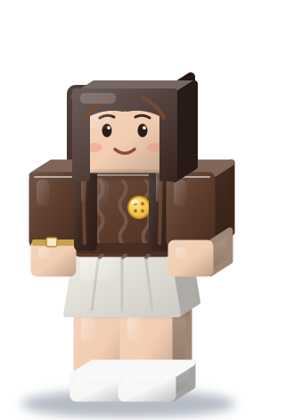

CASE 01
TEA: Text Entry Augmentation
UX Lead
26% faster translation
Beyond the button: One mistranslated term can change what a researcher believes. TEA makes AI show its work in any language.
Hellomy name is
Sabrina May
Product designer and UX researcher. I design for the player, the system, and the world it touches.
RESEARCH
UX & Trust in HCI @ University of Michigan.
OPERATIONS
Implemented digital pathology in U.S. hospitals at Epic.
POLICY
Tech policy HCI extern at the Center for Democracy and Technology.
CASE 01
UX Lead
26% faster translation
Beyond the button: One mistranslated term can change what a researcher believes. TEA makes AI show its work in any language.

CASE 02
UX researcher and designer
75% said mentorship improved their networking
Beyond the button: A scattered career search hits students with less time and fewer connections hardest. Anchor puts the whole search on one page.

CASE 03
Product designer, solo concept
11 to 1 places to check, carried in one companion
Beyond the button: When the record and the room disagree, the person standing there should be able to say so. Waypoint routes that correction to its owner without overwriting the audit trail.
Why Roblox
When Roblox made age checks the key to chat, one policy decision was felt in every conversation. That's the full zoom I work in.

One playerContextual inquiry with researchers (TEA)Same loop: research, act, repeat
Builds what players need, not just what they want. Then gives creators the analytics to do the same.
I don't guess. I research what people need, triage the right first problem, and ship the fix before they ask.
“People don't know what they want until you show it to them.”
Next: grow from APD into a designer who shapes the business, because I understand every layer a single feature touches.